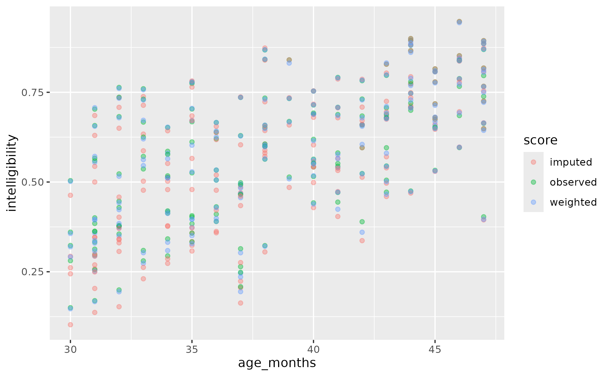
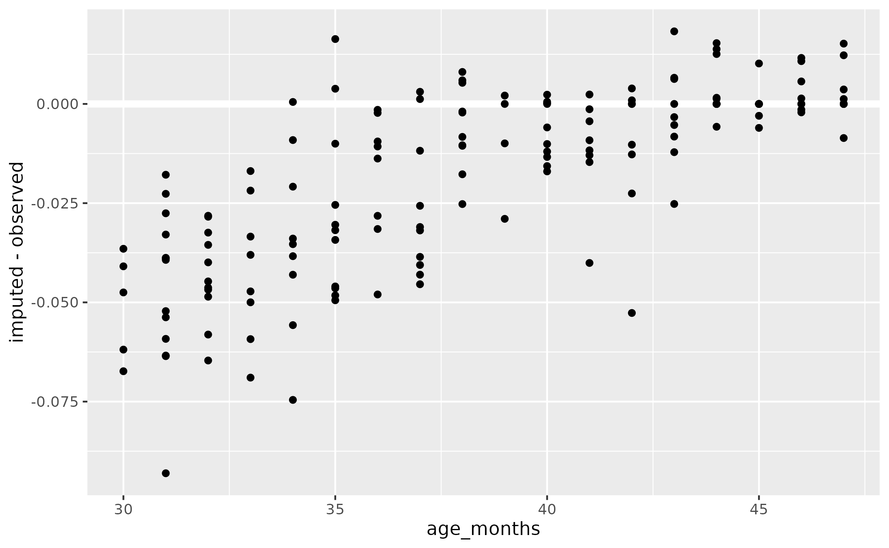

Utterance length imputation and weighting
Tristan Mahr
Source:vignettes/articles/utterance-length-imputation.Rmd
utterance-length-imputation.RmdIn this article, I describe the background of the
impute_values_by_length() and
weight_lengths_with_ordinal_model() functions in our work
and demonstrate their use. Each of these functions had been used in
different projects (for example, intelligibility and then later
articulation rate), and I had been copying and tweaking the code from
project to project. I have decided to give them a more static, public
implementation in this package. For each function, I will first show the
most recent package implementation and demonstrate the package version,
verifying that produce similar results.
For the demonstrations that follow, I used the
data_example_intelligibility_by_length dataset which
consists of model-simulated intelligibility scores. In short, I fit a
model for children’s intelligibility scores and then asked the most to
estimate back the original data, provide a statistically faithful but
jittered version of the original dataset.
data_demo <- data_example_intelligibility_by_length |>
filter(length_longest != 1)Background
In Hustad and colleagues (2020), we modeled intelligibility data in young children’s speech. Children would hear an utterance and then would repeat it. The utterances started at 2 words in length, then increased to 3 words in length, and so on in batches of 10 sentences, all the way to 7 words in length. There was a problem, however: Not all of the children could produce utterances at every length. Specifically, if a child could not reliably produced 5 utterances of a given length length, the task was halted. So given the nature of the task, if a child had produced 5-word utterances, they also produced 2–4-word utterances as well.
Here, in our modeled/re-simulated version of the dataset, observe how the number of children per utterance length decreases:
library(tidyverse)
data_demo |>
count(tocs_level)
#> # A tibble: 7 × 2
#> tocs_level n
#> <int> <int>
#> 1 1 164
#> 2 2 164
#> 3 3 162
#> 4 4 102
#> 5 5 47
#> 6 6 30
#> 7 7 24The length of the utterance plausibly influenced the outcome variable: Longer utterances have more words that might help a listener understand the sentence, for example. Therefore, it did not seem appropriate to ignore the missing values. We used the following two-step procedure (see the Supplemental Materials for more detail):
impute the missing values at each utterance length using values from shorter lengths, and do the imputation in stages, so that an imputed value for length L can be used a predictor for L + 1.
weight each utterance length by the probability of it being produced for a child at a given age and take the weighted average of the outcome variable across all length.
Our goal for the data preparation was to produce a single-number intelligibility score, which this final weighted average provides such a number. With this procedure, missing data is not ignored and implausible data (like the longest utterances at the youngest ages) is downweighted.
Imputation
The flow for the code consists of the following steps:
- reshape the data into a wide format,
- train a series of linear models trained on the observed data,
- predict the responses for missing values
- reshape back to a long format
Here is the most recent non-package version of the function:
impute_values <- function(data, var, data_train = NULL) {
spec <- build_wider_spec_for_imputation(data, {{ var }})
data_wide <- pivot_wider_for_imputation(data, spec)
if (is.null(data_train)) {
data_train <- data
}
data_wide_train <- pivot_wider_for_imputation(data_train, spec)
models <- fit_imputation_models(data_wide_train)
data_imputed <- data_wide |>
mutate(
y_3 = ifelse(is.na(y_3), predict(models$m_3, pick(everything())), y_3)
) |>
mutate(
y_4 = ifelse(is.na(y_4), predict(models$m_4, pick(everything())), y_4)
) |>
mutate(
y_5 = ifelse(is.na(y_5), predict(models$m_5, pick(everything())), y_5)
) |>
mutate(
y_6 = ifelse(is.na(y_6), predict(models$m_6, pick(everything())), y_6)
) |>
mutate(
y_7 = ifelse(is.na(y_7), predict(models$m_7, pick(everything())), y_7)
)
# handle these separately because `length_longest` could have been imputed if
# there was a different strategy
data_child_ll <- data_wide |>
distinct(group, subject_num, visit_id, age_months, length_longest)
data_original_values <- data_wide |>
tidyr::pivot_longer_spec(spec) |>
distinct(group, subject_num, visit_id, tocs_level, {{ var }})
d <- data_imputed |>
tidyr::pivot_longer_spec(spec) |>
rename("imputed_{{ var }}" := {{ var }}) |>
select(-length_longest) |>
left_join(
data_child_ll,
by = c("group", "subject_num", "visit_id", "age_months")
) |>
left_join(
data_original_values,
by = c("group", "subject_num", "visit_id", "tocs_level")
) |>
mutate(
imputed = ifelse(is.na({{ var }}), "imputed", "observed"),
facet_lab = paste0(tocs_level, " words")
)
d
}
fit_imputation_models <- function(data) {
list(
m_7 = lm(y_7 ~ y_1 + y_2 + y_3 + y_4 + y_5 + y_6, data),
m_6 = lm(y_6 ~ y_1 + y_2 + y_3 + y_4 + y_5 + length_longest, data),
m_5 = lm(y_5 ~ y_1 + y_2 + y_3 + y_4 + length_longest, data),
m_4 = lm(y_4 ~ y_1 + y_2 + y_3 + length_longest, data),
m_3 = lm(y_3 ~ y_1 + y_2 + length_longest, data)
)
}
build_wider_spec_for_imputation <- function(data, var) {
tidyr::build_wider_spec(
data,
names_from = tocs_level,
names_prefix = "y_",
values_from = {{ var }}
)
}
pivot_wider_for_imputation <- function(data, spec) {
data |>
tidyr::pivot_wider_spec(
spec,
id_cols = c(
group, subject_num, visit_id, length_longest, age_months
)
)
}This implementation is unsatisfactory for a number of reasons. It
hardcodes many unneeded variables, so to apply it to the example
dataset, I have to add filler values for those variables. It also
hardcodes the number of models and the predictors for the imputation
model. The y_1 in the lm() indicates that the
scores from the single-word trials are being used for the imputation.
This inclusion may or may not be appropriate. In speaking rate studies,
it doesn’t make sense to use include data from the single-word
trials.
But, these caveats aside, it works:
data_imputation_1 <- data_demo |>
mutate(group = "fake", visit_id = 1) |>
rename(subject_num = child) |>
impute_values(sim_intelligibility)And here is how we can recreate Figure 3 from the supplemental materials:
plotting_constants <- list(
pal = c(
imputed = "#C7A76C",
observed = "#7DB0DD",
"mean ± SE" = "grey30"
),
guides_pal = guides(
shape = "none",
color = guide_legend(
title = NULL,
override.aes = list(
alpha = 1,
shape = c(16, 17, 16),
linetype = c("blank", "blank", "solid")
)
)
)
)
plotting_constants$scale_pal <- scale_color_manual(
values = plotting_constants$pal,
limits = names(plotting_constants$pal)
)
set.seed(100)
ggplot(data_imputation_1 |> filter(tocs_level != 1)) +
aes(
x = length_longest,
y = imputed_sim_intelligibility,
color = imputed,
shape = imputed
) +
geom_jitter(width = .3, alpha = .5, height = 0) +
stat_summary(
aes(group = length_longest, color = "mean ± SE"),
fun.data = mean_se
) +
plotting_constants$scale_pal +
plotting_constants$guides_pal +
facet_wrap("facet_lab") +
scale_y_continuous(
"Intelligibility",
labels = scales::percent_format(1)
) +
labs(
x = "Length of longest utterance (observed)"
) +
theme(legend.position = "bottom", legend.justification = "right")Results of imputing multiword intelligibility using length-of-longest utterance and the average intelligibilities of shorter utterance lengths.
In comparison, here is the package version of this procedure. We have to specify all of the relevant variables ahead of time, but the number of models or the variables involved are no longer hard-coded.
data_imputation_2 <- data_demo |>
impute_values_by_length(
var_y = sim_intelligibility,
var_length = tocs_level,
id_cols = c(child, age_months, length_longest),
include_max_length = TRUE
)
all.equal(
data_imputation_1$imputed_sim_intelligibility,
data_imputation_2$sim_intelligibility_imputed
)
#> [1] TRUEIn the original models, the length of the longest utterance is used as a continuous predictor in the imputations. In the package version this behavior is optional and disabled by default. It does not affect the results noticeably.
data_imputation_3 <- data_demo |>
impute_values_by_length(
var_y = sim_intelligibility,
var_length = tocs_level,
id_cols = c(child, age_months, length_longest),
include_max_length = FALSE
)
all.equal(
data_imputation_2$sim_intelligibility_imputed,
data_imputation_3$sim_intelligibility_imputed
)
#> [1] "Mean relative difference: 8.473438e-05"
cor(
data_imputation_2$sim_intelligibility_imputed,
data_imputation_3$sim_intelligibility_imputed
)
#> [1] 1
ggplot(data_imputation_2 |> filter(tocs_level != 1)) +
aes(
x = length_longest,
y = sim_intelligibility_imputed,
color = sim_intelligibility_imputation,
shape = sim_intelligibility_imputation
) +
geom_jitter(width = .3, alpha = .5, height = 0) +
stat_summary(
aes(group = length_longest, color = "mean ± SE"),
fun.data = mean_se
) +
plotting_constants$scale_pal +
plotting_constants$guides_pal +
facet_wrap("tocs_level") +
scale_y_continuous(
"Intelligibility",
labels = scales::percent_format(1)
) +
labs(
x = "Length of longest utterance (observed)"
) +
theme(legend.position = "bottom", legend.justification = "right")Limit the observations used to train the imputation model
The data_train argument allows us to specify a dataset
that will train the imputation model. data_train can also
be a function that will applied to the original data set undergoing
imputation.
data_imputation_trained <- data_demo |>
impute_values_by_length(
var_y = sim_intelligibility,
var_length = tocs_level,
id_cols = c(child, age_months, length_longest),
include_max_length = TRUE,
# suppose we wanted to impute using older participants
data_train = data_demo |> filter(age_months > 44)
)
data_imputation_trained_2 <- data_demo |>
impute_values_by_length(
var_y = sim_intelligibility,
var_length = tocs_level,
id_cols = c(child, age_months, length_longest),
include_max_length = TRUE,
# suppose we wanted to impute using older participants
data_train = function(x) x |> filter(age_months > 44)
)
all.equal(
data_imputation_trained$sim_intelligibility_imputed,
data_imputation_trained_2$sim_intelligibility_imputed
)
#> [1] TRUEUtterance weighting
Below is the most recent non-package version of the utterance length weighting code. The basic steps are
- preparing a dataset
- fitting an ordinal regression model on the length of longest utterance using age as a predictor
- computing the probabilities for each utterance length as a function of age
Originally, we had used MASS::polr() for the models but
I think ordinal::clm() is easier to use.
prepare_longest_length_model_data <- function(data) {
data |>
group_by(child) |>
mutate(
length_longest = max(tocs_level)
) |>
ungroup() |>
distinct(child, tocs_level, age_months, length_longest) |>
filter(tocs_level == length_longest) |>
mutate(
lol = factor(length_longest),
lol_ord = ordered(lol)
)
}
fit_longest_length_model <- function(data, df = 2) {
ordinal::clm(
lol_ord ~ splines::ns(age_months, df = df),
data = data
)
}
compute_longest_length_weights <- function(data, model) {
d_ages <- data |>
distinct(age_months) |>
mutate(
# predicted longest length by age
lol_predicted = model |>
predict(newdata = pick(everything()), type = "class") |>
getElement("fit")
)
d_ages |>
predict(model, newdata = _, type = "prob") |>
getElement("fit") |>
bind_cols(d_ages) |>
tidyr::pivot_longer(
cols = -c(age_months, lol_predicted),
names_to = "lol",
values_to = "lol_prob"
) |>
group_by(age_months) |>
mutate(
lol_num = as.numeric(as.character(lol)),
lol_weighted = lol_prob * lol_num
) |>
arrange(-lol_num) |>
mutate(
prob_reach_length = cumsum(lol_prob),
normalized_prob_reach_length = prob_reach_length / sum(prob_reach_length)
) |>
ungroup()
}Here we can apply this non-package implementation to the example data:
data_lol <- data_demo |>
filter(tocs_level != 1) |>
prepare_longest_length_model_data()
m <- fit_longest_length_model(data_lol, df = 2)
data_lol_weights <- data_lol |>
compute_longest_length_weights(model = m) |>
distinct(
age_months,
tocs_level = lol_num,
prob_reach_length,
normalized_prob_reach_length
)And here is how we can recreate the Figure from the supplemental materials:
p1 <- ggplot(data_lol_weights) +
aes(x = age_months, y = prob_reach_length ) +
geom_line(aes(color = ordered(tocs_level))) +
geom_text(
aes(label = tocs_level, color = ordered(tocs_level)),
x = 29,
data = data_lol_weights |>
filter(age_months == 30, tocs_level %in% c(2, 3, 4, 7)),
fontface = "bold"
) +
geom_text(
aes(label = tocs_level, color = ordered(tocs_level)),
x = 48,
data = data_lol_weights |>
filter(age_months == 47, tocs_level %in% c(2, 5, 6, 7)),
fontface = "bold"
) +
scale_color_ordinal(end = .85) +
guides(color = "none") +
labs(x = "Age [months]", y = "Prob. of reaching length") +
scale_x_continuous(limits = c(28, 49))
p1
p2 <- p1 +
aes(y = normalized_prob_reach_length) +
labs(y = "Weight of utterance length")
p2This implementation is somewhat unsatisfactory. It hardcodes variable names, so it’s harder to reuse, and it is complicated to use, requiring three functions and a join. In the package implementation, we hide everything behind a single function.
data_plot <- weight_lengths_with_ordinal_model(
data_train = data_demo |>
filter(tocs_level != 1),
var_length = tocs_level,
var_x = age_months,
id_cols = c(child),
spline_df = 2
)We can see a match in weights between the two implementations.
Combining the imputation and the weights
The last step of the process is to combine the imputed values and the length weights, and then take the means of the imputed values. This step is a straightforward table join. Although we used single-word scores for imputation (because they are highly correlated with other intelligibility scores), we do not use them for weighting. The target variable here is a single-number summary of intelligibility in 2–7-word utterances, so we exclude 1-word scores.
data_weighted_1 <- data_imputation_1 |>
filter(tocs_level != 1) |>
left_join(data_lol_weights, by = join_by(age_months, tocs_level))
data_means_wide_1 <- data_weighted_1 |>
group_by(subject_num, age_months) |>
summarise(
observed = mean(sim_intelligibility, na.rm = TRUE),
imputed = mean(imputed_sim_intelligibility),
weighted = weighted.mean(
imputed_sim_intelligibility,
normalized_prob_reach_length
),
.groups = "drop"
)
data_means_wide_1
#> # A tibble: 164 × 5
#> subject_num age_months observed imputed weighted
#> <chr> <int> <dbl> <dbl> <dbl>
#> 1 c001 45 0.533 0.530 0.531
#> 2 c002 42 0.389 0.337 0.360
#> 3 c003 41 0.544 0.532 0.540
#> 4 c004 42 0.660 0.660 0.655
#> 5 c005 43 0.707 0.725 0.710
#> 6 c006 42 0.524 0.513 0.523
#> 7 c007 32 0.355 0.307 0.350
#> 8 c008 43 0.828 0.828 0.832
#> 9 c009 38 0.868 0.873 0.869
#> 10 c010 47 0.767 0.767 0.765
#> # ℹ 154 more rowsWe can automate the joining step. Our
weight_lengths_with_ordinal_model() takes an optional
data_join argument specifying a dataframe that the
estimated weights should be joined onto. This argument is intended for
the dataframe of imputed values. We cannot pass in the imputed values as
data_train because with missing values imputed, everyone
has the same length of longest utterance.
data_weighted_2 <- weight_lengths_with_ordinal_model(
data_train = data_demo |> filter(tocs_level != 1),
var_length = tocs_level,
var_x = age_months,
id_cols = c(child),
spline_df = 2,
data_join = data_imputation_2 |> filter(tocs_level != 1)
)
data_means_wide_2 <- data_weighted_2 |>
group_by(child, age_months) |>
summarise(
observed = mean(sim_intelligibility, na.rm = TRUE),
imputed = mean(sim_intelligibility_imputed),
weighted = weighted.mean(sim_intelligibility_imputed, tocs_level_weight),
.groups = "drop"
)We can see the same results from both methods.
all.equal(data_means_wide_1$observed, data_means_wide_2$observed)
#> [1] TRUE
all.equal(data_means_wide_1$imputed, data_means_wide_2$imputed)
#> [1] TRUE
all.equal(data_means_wide_1$weighted, data_means_wide_2$weighted)
#> [1] TRUEThe three values overall are very similar:
data_means <- data_means_wide_2 |>
tidyr::pivot_longer(
cols = c(-child, -age_months),
names_to = "score",
values_to = "intelligibility"
)
ggplot(data_means) +
aes(x = age_months, y = intelligibility, color = score) +
geom_point(alpha = .4)
But importantly, imputation is negatively biased in younger children who cannot reach the longer utterance lengths. Points fall below the diagonal when the two types of scores are compared, and the difference between the two scores is more negative at younger ages.
ggplot(data_means_wide_2) +
aes(x = observed, y = imputed) +
geom_abline() +
geom_point()
ggplot(data_means_wide_2) +
aes(x = age_months, y = imputed - observed) +
geom_hline(yintercept = 0, linewidth = 2, color = "white") +
geom_point()
When we weight by utterance length probability, then the score has a tighter correlation with observed, un-adjusted scores. The pointwise differences between the weighted and observed values is small, between ±2 percentage points of intelligibility.
ggplot(data_means_wide_2) +
aes(x = observed, y = weighted) +
geom_abline() +
geom_point()
ggplot(data_means_wide_2) +
aes(x = age_months, y = weighted - observed) +
geom_hline(yintercept = 0, linewidth = 2, color = "white") +
geom_point()
Using a function for data_train
weight_lengths_with_ordinal_model() also supports
providing a function for data_train. In this case, the
function is applied to data_join. Here is how we would
train the weights on the observed values in the imputation
dataframe.
data_weighted_3 <- weight_lengths_with_ordinal_model(
data_train = function(x) x |>
filter(sim_intelligibility_imputation == "observed"),
var_length = tocs_level,
var_x = age_months,
id_cols = c(child),
spline_df = 2,
data_join = data_imputation_2 |> filter(tocs_level != 1)
)
all.equal(
data_weighted_2$tocs_level_prob_reached,
data_weighted_3$tocs_level_prob_reached
)
#> [1] TRUEReferences
Hustad, K. C., Mahr, T., Natzke, P. E. M., & Rathouz, P. J. (2020). Development of Speech Intelligibility Between 30 and 47 Months in Typically Developing Children: A Cross-Sectional Study of Growth. Journal of Speech, Language, and Hearing Research, 63(6), 1675–1687. https://doi.org/10.1044/2020_JSLHR-20-00008
Hustad, K. C., Mahr, T., Natzke, P. E. M., & J. Rathouz, P. (2020). Supplemental Material S1 (Hustad et al., 2020). ASHA journals. https://doi.org/10.23641/asha.12330956.v1